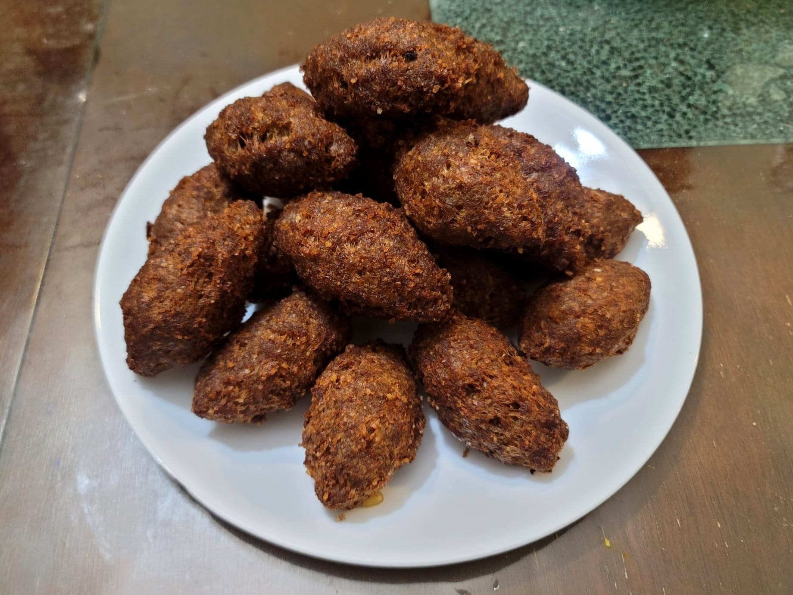

Kibbeh

Ingredients:
Kibbeh Dough:
- 2 1/2 Fine bulgur, #1 fine
- Water, as needed
- 1 1/2 lb Lean ground beef or Ground lamb
- 1 large Onion, quartered
- 1/2 tbsp Salt
- 2 tsp Allspice
- 1 tsp Coriander
- 1 tsp Black pepper
- 1/2 tsp Cinnamon
- Oil for frying
Filling:
- 1 lb Lean ground beef or Ground lamb
- 1 tbsp Olive oil
- 1 Onion, diced or grated
- 1/3 cup Pine nuts, toasted
- 1 tsp Salt
- 1 tsp Allspice
- 1/2 tsp Cinnamon
- 1/2 tsp Black pepper
Instructions:
- Place the bulgur into some cheesecloth and submerge in water. Let soak for at least 15 minutes. Then squeeze out as much water as possible.
- Place the ground meat, onion, salt, and spices into a food processor and pulse until as smooth as possible. Then transfer to a mixing bowl with the bulgur. Mix to combine. Cover and let chill in the refrigerator.
- Prepare the filling. In a pan, heat the olive oil over medium heat. Add the onion and sauté until just starting to brown, about 10 minutes. Then add the ground meat and sauté until browned, about another 10 minutes. Add in the pine nuts, salt, and spices and mix to combine. Remove from heat and let cool to room temperature.
- Prepare a baking sheet with parchment paper. Remove the kibbeh dough from the fridge.
- With wet hands, take 2 tbsp of the kibbeh dough and form into an oval shaped disc in your hands. Create a well in the dough using your fingers and fill with 1 tbsp of the filling. Seal the dough and form into a football shape. Place onto the baking sheet and repeat for the rest of the filling and dough.
- Transfer to a fridge and let chill for about 1 hour.
- Heat up a few inches of oil to 350 degrees Fahrenheit. Deep fry the kibbeh in batches for about 5 minutes per batch. Transfer to a paper towel lined bowl and then to a serving plate.
- Serve immediately with some tahini sauce, tzatziki sauce, tabbouleh, or other.